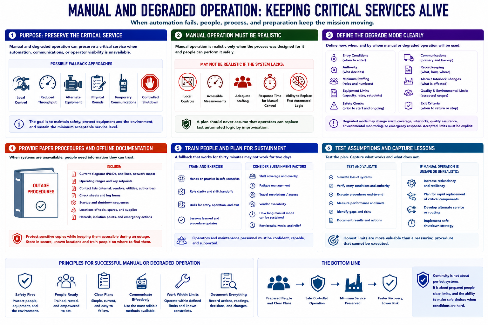

Manual Operations and Fallback Procedures
Connecting to LMS... Progress: in progress

Narration
Manual and degraded operation can preserve a critical service when automation, communications, or operator visibility is unavailable. The fallback may involve local control, reduced throughput, alternate equipment, physical rounds, temporary communications, or a controlled process shutdown.
Manual operation is realistic only when the process was designed for it and people can perform it safely. Some modern systems lack local controls, accessible measurements, staffing, or response time for manual control. A plan should never assume that operators can replace fast automated logic by improvisation.
Define entry conditions, authority, minimum staffing, equipment limits, safety checks, communications, recordkeeping, and exit criteria. Degraded mode may change alarm coverage, interlocks, quality assurance, environmental monitoring, or emergency response, so accepted limits must be explicit.
Provide paper procedures and offline documentation for situations when normal systems are unavailable. Include current diagrams, operating ranges, contact lists, check sheets, startup and shutdown sequences, and locations of tools and spares. Protect sensitive copies while keeping them accessible during an outage.
Train operators and maintenance personnel through safe exercises. Consider shift coverage, fatigue, travel restrictions, vendor availability, and how long a manual mode can be sustained. A fallback that works for thirty minutes may not work for two days.
Test assumptions and capture lessons. If manual operation is unsafe or unrealistic, continuity planning should emphasize redundancy, rapid replacement, alternate service, or safe shutdown. Honest limits are more valuable than a reassuring procedure that cannot be executed.